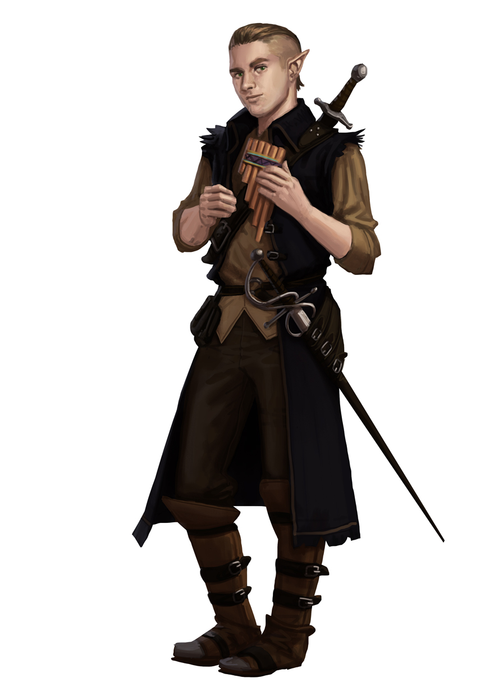

Полуэльф (Half-Elf)
Описание
Полуэльфы выше людей, но ниже эльфов. Они наследуют стройность и красоту своих эльфийских предков, а человеческая сторона определяет цвет их кожи. Уши полуэльфов более округлые и менее острые, чем у эльфийских предков. Их глаза похожи на человеческие, но радужка бывает самых разных цветов: от янтарного до фиолетового и от изумрудного до темно-синего.
Общество
Отсутствие единой родины и культуры заставляет полуэльфов быть гибкими и приспосабливаться к любому окружению. Несмотря на привлекательность для обоих народов, полуэльфы редко вливаются в людское или эльфийское общество: слишком много «чуждого» видят в них и люди, и эльфы. Подобное неприятие давит тяжелым грузом на плечи многих полуэльфов, но есть среди них и те, кто считает такое положение дел выгодным: отсутствие собственной культуры дарует им абсолютную свободу, чем не может похвастаться никто другой. Полуэльфы - чрезвычайно гибкий народ, способный подстроить свой образ мыслей и таланты под нужды окружения, в котором оказывается.
Отношения с другими расами
Полуэльфы отлично понимают, что такое одиночество, и знают, что жизненный опыт значит больше, чем происхождение. Они открыты к союзам и дружбе с представителями других народов и не склонны судить новых знакомых, полагаясь на первое впечатление.
Мировоззрение и религия
Отчуждение сильно влияет на характер и философию полуэльфов. Жестокость им не свойственна, так же как и стремление смешаться с толпой, стать как все и следовать общим правилам. Как результат, мировоззрение большинства полуэльфов - хаотичное доброе. Из-за отсутствия у полуэльфов единой кудьтуры они реже обращаются к религии, но те, кто делает это, обычно поклоняются богам, популярным на их родине.
Искатели приключений
Полуэльфы - бродяги, странствующие в поисках края, который они могли бы назвать домом. Желание проявить себя перед обществом, отвоевать себе в нем место, а может быть, и оставить свой след в истории толкает многих из них на подвиги.
Расовые особенности
+2 к значению одной характеристики. Персонаж-полуэльф получает +2 к одной характеристике по выбору игрока, что отражает разностороннюю природу этого народа.
Средний размер. Полуэльфы - существа среднего размера, что не дает им никаких бонусов или штрафов.
Нормальная скорость. Базовая скорость полуэльфов - 30 футов.
Сумеречное зрение. Полуэльфы видят вдвое дальше людей в сумерках.
Приспособляемость. Полуэльфы получают на 1 уровне дополнительную черту Эксперт в навыке по выбору игрока.
Смешанная кровь. Для эффектов, воздействующих на определенный народ, полуэльфы считаются и людьми, и эльфами.
Эльфийский иммунитет. Полуэльфы невосприимчивы к магическому сну и получают +2 (народ) к испытаниям против заклинаний и эффектов школы очарования.
Острые чувства. Полуэльфы получают +2 (народ) к проверкам Внимания.
Разносторонний. Полуэльфы выбирают два предпочитаемых класса на 1 уровне и получают 1 пункт навыков или 1 пункт здоровья каждый раз, когда берут уровень в одном из этих классов.
Языки. Полуэльфы начинают игру со знанием эльфийского и всеобщего языков. Полуэльфы с высоким значением Интеллекта могут изучить любые дополнительные языки (кроме тайных, таких как друидический).
Назад к списку народов